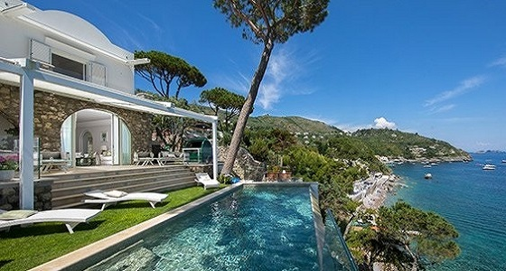

Your best summer holiday ever! Croatia, island Korcula, Lumbarda
Villa Nikša & Kristina Cebalo

- Villa is located on Korcula Island in the small village Lumbarda. It has a spacious terrace with views of the Adriatic Sea and a private beach area.
Villa Captain's Sokol

- This property is 1 minute walk from the beach. Captain's Villa Sokol is a stone-made villa standing in a picturesque bay of Lumbarda, surrounded by pine-trees and situated just steps away from the sea.